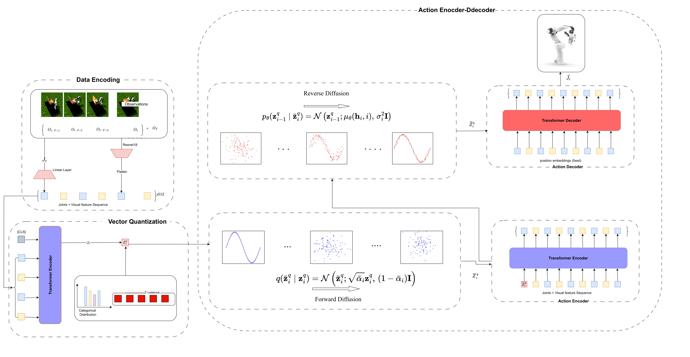
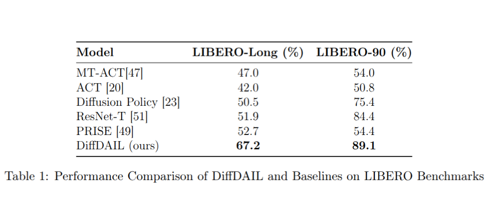
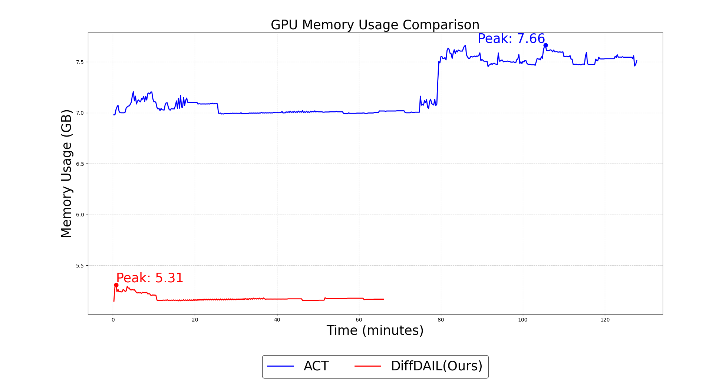
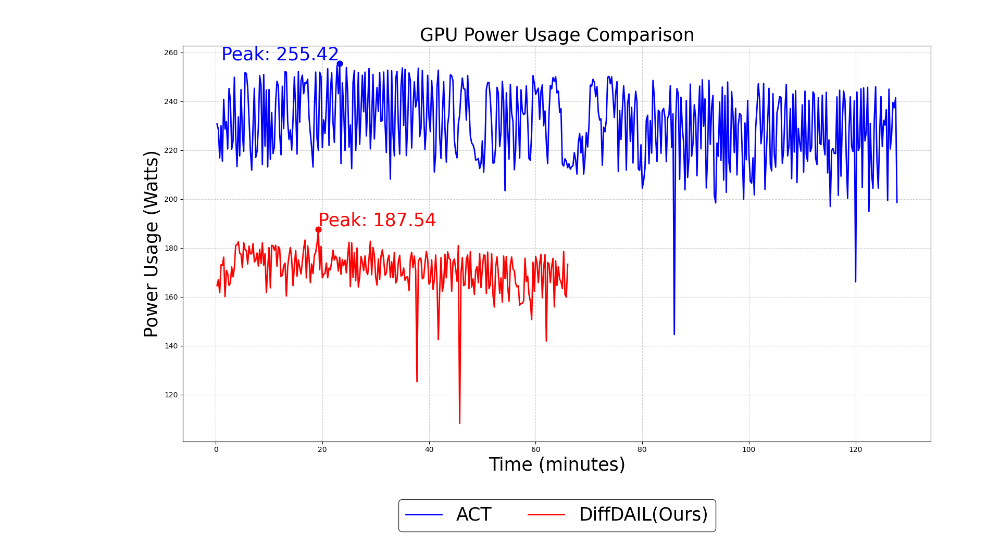
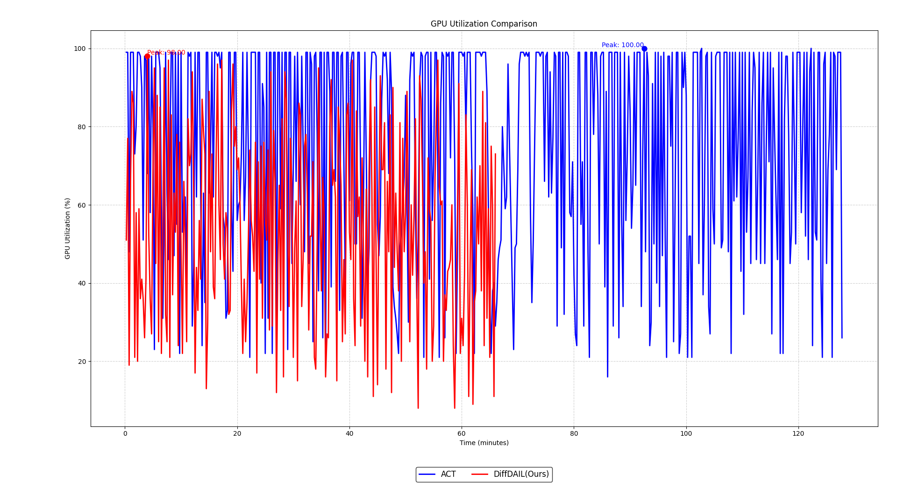
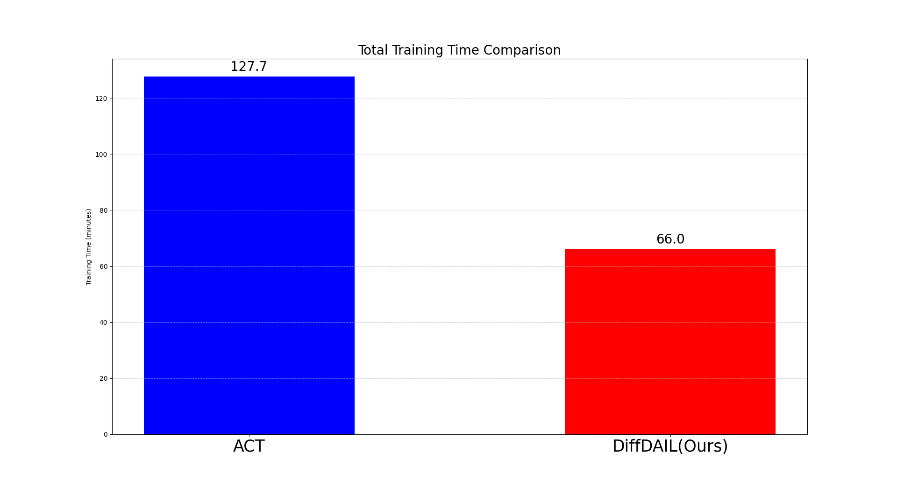

Robotic imitation learning often struggles with high-dimensional sensory inputs, noisy demonstrations, and computational inefficiency in policy learning. We present Discrete Action Imitation Learning enhanced with Diffusion (DiffDAIL), a vision-guided framework that combines discrete action encoding and diffusion-based representation learning to address these challenges. By discretizing latent embeddings, DiffDAIL reduces computational cost, while a diffusion-based denoising loop improves robustness and captures heterogeneous action distributions. A Transformer-based architecture further models long-range dependencies in sequential decision-making tasks. Experimental results across benchmark manipulation tasks demonstrate that DiffDAIL outperforms conventional VAE-based and diffusion methods, achieving higher task success rates and improved data efficiency. These results highlight DiffDAIL as a scalable, robust, and resource-efficient approach for vision-guided robotic imitation learning.

An overview of the proposed DiffDAIL framework. The pipeline begins with multimodal observations, consisting of joint states and visual features extracted via a ResNet18 backbone. These are processed by a Transformer Encoder with position embeddings, generating temporally contextualized representations. The latent features are then mapped into a discrete space through Vector Quantization, where a codebook learns categorical embeddings to ensure computational efficiency. A forward diffusion process perturbs the discrete embeddings with controlled noise, promoting robustness and trajectory learning. It is applied only during training to promote robustness and improve trajectory learning. The noised embeddings are passed through a Transformer-based Action Encoder, which models long-range sequential dependencies. Finally, a denoising loop iteratively refines the discrete embeddings, and the Action Decoder reconstructs the final action sequence for robotic execution.




